Other Creative Works
Art Sketches
The art sketches are completed in Xi'an, Hongcun, Zibo and Shanghai in China, including classical Chineses painting, Ink drawing, charcoal drawing and gouache of flowers, buildings, jars and fruit.
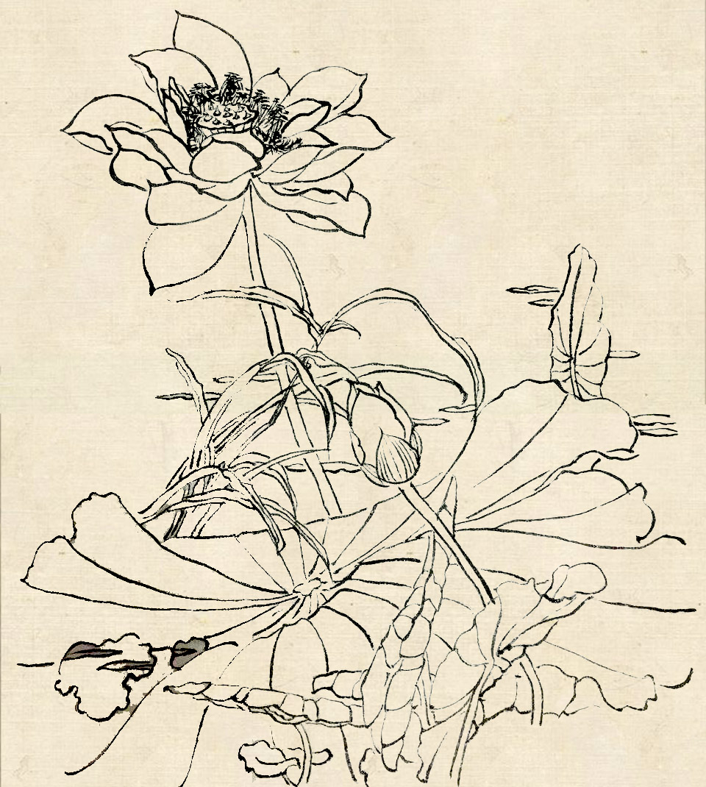
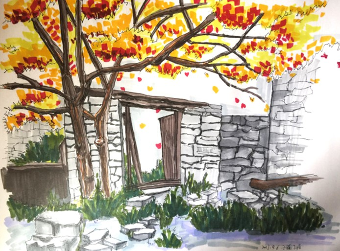
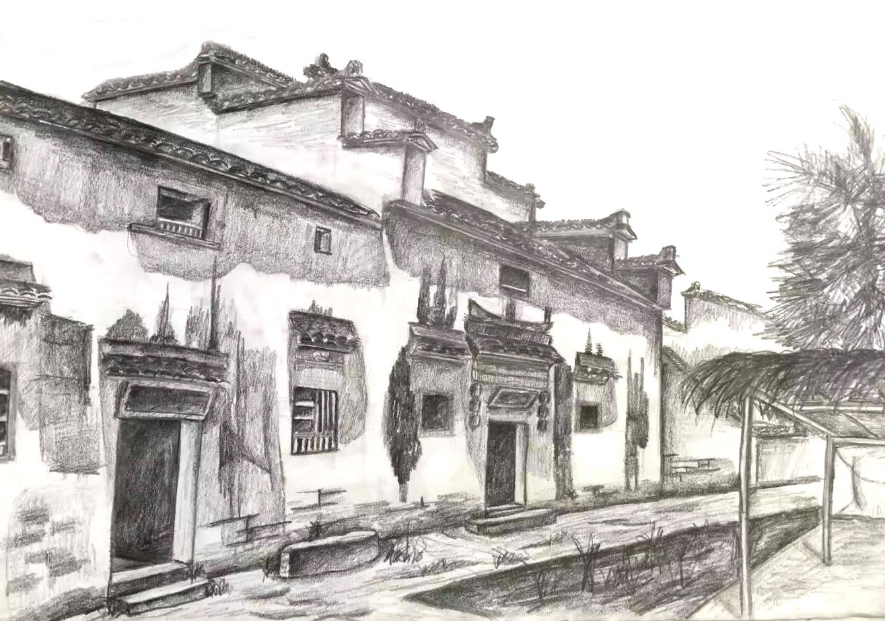
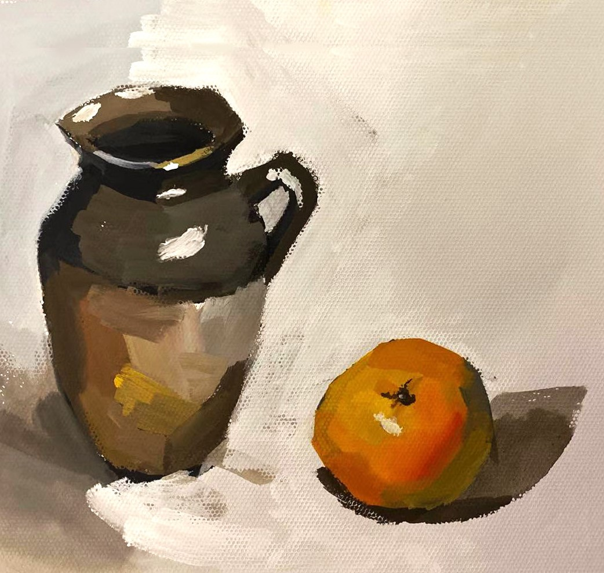
Observation Log of a Platan
The photos were taken in Tongji University, Shanghai, China during 2018's fall to 2019's summer, showing the tree’s status from withering to flourish.
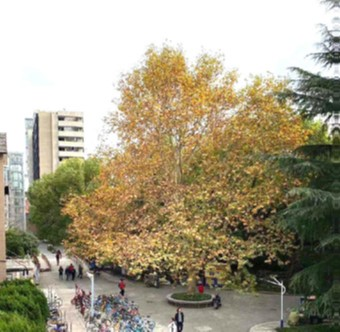
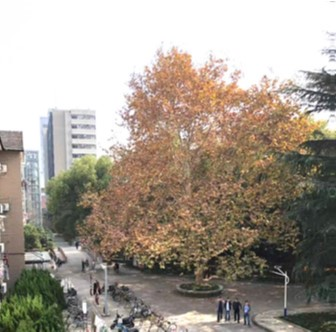
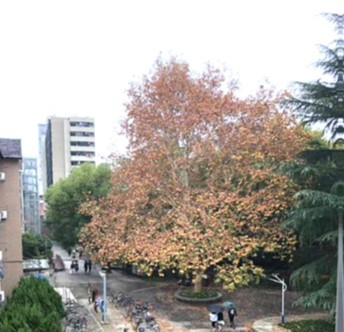
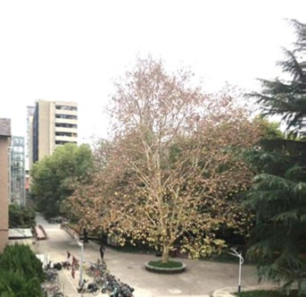
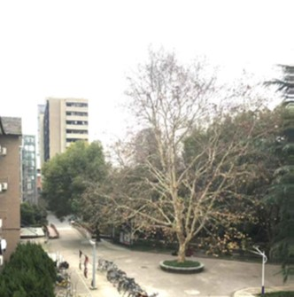
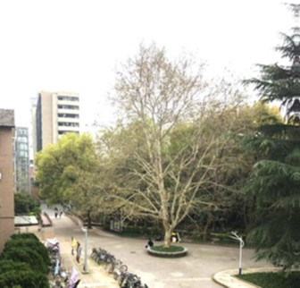
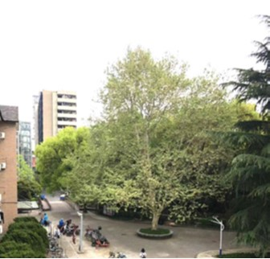
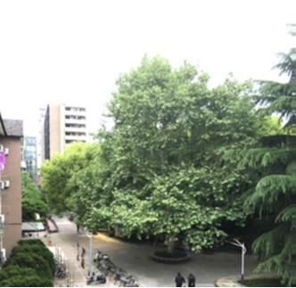
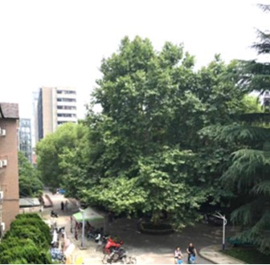
Architectural Structure Construction
The name of the construction is Subterranean Flow. Using the bendable properties of the material as a starting point for the design, making the monomers by braiding the strip board, we constructed the structure by splicing the monomers, immitating the form of surge.
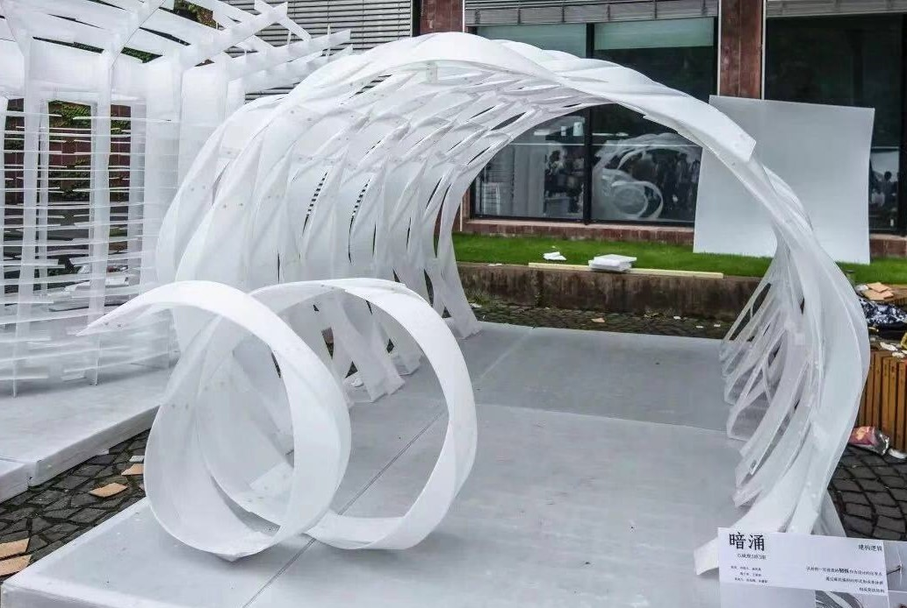
Base Size: 2*4 M
Construction Site: Shanghai
Material Used: Hollow plastic plate
Construction Duration: 8 hours